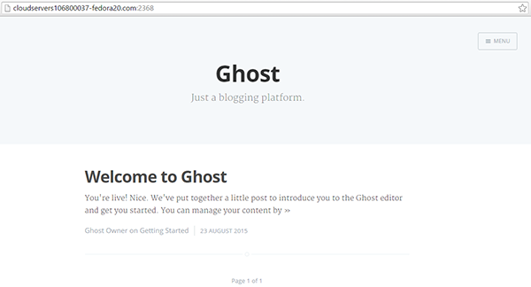

Serve multiple Ghost blogs on one server using Nginx - CentOS, Fedora, CMS, Ghost, Nginx, Node.js
Difficulty: 2
Time: 1 hour
A single virtual private server (VPS) machine can be used to host multiple Ghost™ blog websites. This option enables organizations to optimally utilize their infrastructure, while providing users with the flexibility to host content independently. This article will provide the steps to set up multiple Ghost blogs on a single platform with Nginx® on CentOS or Fedora™ platform.
It is assumed that you are logged in as a sudo user.
blog1 configuration file.
server_name parameter by adding the first domain name.
server {
listen 0.0.0.0:80;
server_name http://blog1.coolexample.com;
access_log /var/log/nginx/blog1.log;
location / {
proxy_set_header X-Real-IP $remote_addr;
proxy_set_header HOST $http_host;
proxy_set_header X-NginX-Proxy true;
proxy_pass http://127.0.0.1:2368;
proxy_redirect off;
}
}:wq.server_name parameter by adding the second domain name. For this configuration file, also update the value for proxy_pass parameter to 2777 (or simply replace the entire contents of the file with following content):
server {
listen 0.0.0.0:80;
server_name http://blog2.coolexample.com;
access_log /var/log/nginx/blog1.log;
location / {
proxy_set_header X-Real-IP $remote_addr;
proxy_set_header HOST $http_host;
proxy_set_header X-NginX-Proxy true;
proxy_pass http://127.0.0.1:2777;
proxy_redirect off;
}
}:wq.product: {, and update the parameter URL.
production: {
url: 'http://blog1.coolexample.com'
...:wq.product: {, and update the parameter URL, as well as the value for the port parameter.
production: {
url: 'http://blog2.coolexample.com',
mail: {},
database: {
client: 'sqlite3',
connection: {
filename: path.join(__dirname, '/content/data/ghost.db')
},
debug: false
},
server: {
// Host to be passed to node's `net.Server#listen()`
host: 'Your IP Address',
// Port to be passed to node's `net.Server#listen()`, for iisnode set this to `process.env.PORT`
port: '2777'
}
},:wq.Upstart scripts help start, stop, restart, or check the status of Ghost sites.
init, where all Upstart scripts are kept.
# ghost-blog1
start on startup
script
cd /var/www/blog1.coolexample.com/ghost
npm start --production
end script:wq.# ghost-blog2
start on startup
script
cd /var/www/blog2.coolexample.com/ghost
npm start --production
end script:wq.The Ghost Blog landing page should be available on the domain names used.

Hosting multiple Ghost logging platforms on a single VPS machine can save organizations from redundant maintenance efforts, and enables optimal management of their blogging infrastructure.